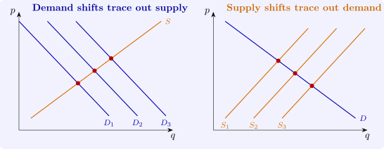

14.1 Structural and reduced forms
Definition 14.1.1. A simultaneous equations model for \(G\) endogenous variables \(y_t\) and \(K\) exogenous variables \(x_t\) is \[ By_t + \Gamma x_t = u_t, \qquad t = 1, \dots , n, \] where \(B\) is a non-singular \(G \times G\) matrix, \(\Gamma \) is \(G \times K\), and the structural disturbances \(u_t\) have mean zero, covariance matrix \(\Sigma \), and are uncorrelated with \(x_t\). Each row is a structural equation, normalised so that one coefficient of \(B\) in it equals one. Solving for \(y_t\) gives the reduced form \[ y_t = \Pi x_t + v_t, \qquad \Pi = -B^{-1}\Gamma , \qquad v_t = B^{-1}u_t . \]
Each endogenous variable is expressed in the reduced form as a function of the exogenous variables alone. Since \(v_t\) is uncorrelated with \(x_t\), least squares applied to each reduced-form equation estimates \(\Pi \) consistently. The structural equations are another matter: each contains endogenous variables on the right, correlated with its disturbance, so least squares is inconsistent, as in Section 13.1.
Example 14.1.2. In the market model \[ \text {demand: } q_t = \alpha _0 + \alpha _1p_t + \alpha _2\,\text {inc}_t + u_{dt}, \qquad \text {supply: } q_t = \beta _0 + \beta _1p_t + \beta _2w_t + u_{st}, \] with income \(\text {inc}_t\) shifting demand and a cost or weather variable \(w_t\) shifting supply, equating the two gives \[ p_t = \frac {\alpha _0 - \beta _0 + \alpha _2\,\text {inc}_t - \beta _2w_t + u_{dt} - u_{st}}{\beta _1 - \alpha _1}, \] and \(q_t\) follows by substitution. Both reduced-form equations have the form \(\pi _0 + \pi _1\text {inc}_t + \pi _2w_t + v_t\). The ratios of reduced-form coefficients recover the slopes: \[ \frac {\pi _{q2}}{\pi _{p2}} = \alpha _1, \qquad \frac {\pi _{q1}}{\pi _{p1}} = \beta _1 . \] The first holds because a change in \(w\) shifts supply along a fixed demand curve, so the induced changes in \(q\) and \(p\) lie on the demand curve; the second because a change in income shifts demand along the supply curve. This is indirect least squares: estimate the reduced form, then solve for the structural parameters.

Questions on this section
Stuck on something here? Ask below and it stays attached to this topic.